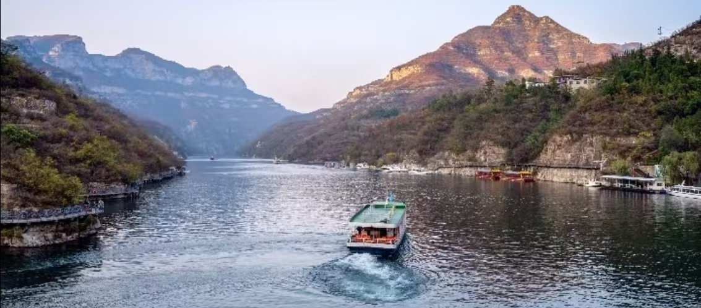
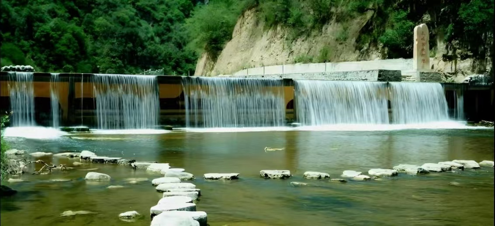

青天河位于河南省焦作市博爱县，地处太行山脉南麓，是国家5A级旅游景区、世界地质公园、国家级风景名胜区。景区集江南水乡之秀与北方山水之雄于一体，被誉为“北方小三峡”。由天井关、大泉湖、三姑泉、观音峡、石佛滩等多个片区组成，山水相融，风光旖旎。
青天河以奇山秀水、峡谷溶洞、泉瀑溪流和田园风光为特色。万亩芦苇荡、千年古镇、天然大佛等景观独具魅力，是北方地区罕见的水上观光与休闲度假胜地，也是中原游客亲水避暑、周末游的首选之地。

📍 地址：河南省焦作市博爱县青天河风景区
🎫 门票：景区实行门票+船票联票制；学生凭学生证半价；60岁以上老人、1.4米以下儿童、现役军人等凭证免门票
⏰ 开放时间
旺季（4月—10月）07:00-18:00，淡季（11月—3月）07:30-17:00，全年开放
🚗 交通指南
🍜 当地特色美食
经典一日游：景区入口 → 石佛滩 → 乘船游大泉湖 → 观音峡 → 三姑泉 → 返程。
深度两日游：Day1 青天河核心湖区游览，宿古镇；Day2 月山寺祈福、天井关怀古，周边乡村体验。
1. 青天河以水上游览为主，**游船是必备交通**，建议提前规划乘船时间。
2. 景区亲水路段较多，部分路面湿滑，务必穿防滑鞋，注意脚下安全。
3. 山区气候多变，湖区风大，夏季防晒、春秋保暖需兼顾。
4. 乘船游览时，保管好随身物品，避免落水。
5. 节假日游客较多，建议提前线上购票，错峰出行。
6. 芦苇荡区域蚊虫较多，夏季游览建议携带驱蚊用品。
春季山花烂漫，湖水碧绿，踏青赏景心旷神怡；夏季水量充沛，碧波荡漾，是天然空调避暑胜地；秋季天高云淡，层林尽染，山水色彩层次丰富，摄影黄金季；冬季静谧清幽，可欣赏独特的冰挂雪景。